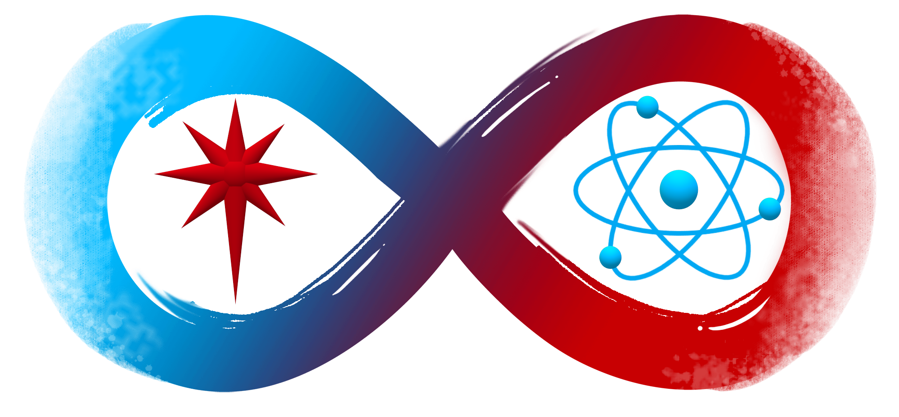

Author: Will Rose ___ Date: January 5, 2020
Now, I know there is a STAR in our gospel lesson ans it appears there is a small band of rebels who resist against an Empire by "going home by another road" but, I'm not going to do a deep dive on Star Wars today.
I do want to go down the road of faith and science. Around four years ago, long time Holy Trinity member adn Professor Emeritus of Physics at Duke, Dr. Al Goshaw, heard an interview with Jesuit Brother and Astronomer Guy Consolmagno on NPR Podcast "On Being" LINK>>> where he talked about the qustions at the crossroads of Faith and Science in Brother Guy's Book, "Would you Baptize an Extraterrestial?" LINK>>>
Al, shared this interview and book with me and other members of our congregation and we thought it would be a good book study to do here at HTLC. This book indeed inspired us to go deeper into the topic of Faith and Science the eventually lead us to recieve a grant from Fuller Seminary and their STEAM (Science and Theology for Emerging Adult Ministries) Project to explore and break down the myth that one must pick one OR the other.
Must one choose Faith OR Science?
Or perhaps, there are plenty of scientists and people of faith, and people of faith whoare scientists who believe that it can be Faith AND Science working together to explore the mysteries of life and our existence in this cosmos. We sought to build upon what others have done in creating a healthier conversation between the work of faith and the work of science and bring to light the manu, many resources out there that contribute to a healthy conversation between the two. We plan to keep this conversation going in 2020 and in the years ahead. Faith and Science Website LINK>>>
Peace, Will Rose
Author: Will Rose ___ Date: April 26, 2019
I haven't been reading as many books on Faith and Science lately but I have been listening to a handful of podcasts on the subject. Some of these names have been on the "faith and science" scene for a while but they are new to me so I have been soaking up their very articulate words on the subject. Check these out and let us know what you think.
Bethany Sollereder | Lion Tennis in HeavenWho's Afraid of Evolutionary Psychology?
Two interviews I really enjoyed were with Dr. Bethany Sollereder on Dan Koch's podcast You Have Permission (You have Permission to Believe in a God who suffers) and her appearance on the new Biologos podcast. She is super smart and sharp and I look forward to checking out her book "God, Evolution, and Animal Suffering: Theodicy without the Fall."
Another great conversation was on Homebrewed Christianity with Dr. Kenneth R. Miller... Listen Here>>> I plan to check out his book "Finding Darwin's God" as well.
Peace, Will Rose
Author: Will Rose ___ Date: April 26, 2019
Dr. Tripp Fuller has recently hosted a series of conversations revolving around faith and science on the Homebrewed Christianity podcast. They are great conversations with amazing scholars and thinkers. If you feel like you are alone in your big questions there are a lot of smart people who have not only been wrestling with them for a long time, but who have also formulated some articulate words around them.
I particularly like this conversation with Dr. Karl Giberson... LISTEN HERE>>>
Dr. Giberson shares openly his own personal story and journey with faith and science and how they can work together. He also sheds light on the complicated relationship science and faith have with Evangelicalism. He gives great book recommendations towards the end of the podcast and you can find them in the link I shared.
We would love to hear what you think about the conversations and if it stirs up any epiphany's or questions for you.
Author: Will Rose ___ Date: November 27, 2018
SCIENCE AND RELIGON by Thomas Dixon
This is a short blog post to lift up this great little book on the basic history and issues that orbit around the gravitational pull of Science and Religion. This book is really well done and gives a great introduction to the names, faces and ideas in faith and science.
The chapters include...
- 1 - What are science-religion debates really about?
- 2 - Galileo and the philosophy of science
- 3 - Does God act in nature?
- 4 - Darwin and evolution
- 5 - Creationism and Intelligent Design
- 6 - Mind and morality
The book also has a six page "further reading" section that lists more resources if you want to go deeper in any or all of the topics discussed.
As we have shared before, there are a lot of resources in the realm of Faith and Science. Keep asking questions and keep exploring because someone has written a book about it.
Author: Dr. Karin Pfennig ___ Date: October 28, 2018
This reflection was given by Dr. Karin Pfennig at a Midweek Lenten worship service at Holy Trinity Lutheran in Chapel Hill.
Genesis 32: 24-29
Jacob was left alone; and a man wrestled with him until daybreak. When the man saw that he did not prevail against Jacob, he struck him on the hip socket; and Jacob’s hip was put out of joint as he wrestled with him. Then he said “let me go, for the day is breaking.” But Jacob said “I will not let you go , unless you bless me.” So he said to him, “What is your name?” And he said “ Jacob.” Then the man said, “You shall no longer be called Jacob, but Israel, for you have striven with God and humans and have prevailed.
John 4: 7-15
A Samaritan woman came to draw water, and Jesus said to her, “Give me a drink” (His disciples had gone to the city to buy food.) The Samaritan women said to him: “How is it that you, a Jew, ask a drink of me, a woman of Samaria?” (Jews do not share things in common with Samaritans.) Jesus answered her, “If you knew the gift of God, and who it is that is saying to you, “Give me a drink” you would have asked him, and he would have given you living water.” The woman said to him “Sir, you have no bucket, and the well is deep. Where do you get that living water? Are you greater than our ancestor Jacob, who gave us this well, and with his sons and his flocks drank from it?” Jesus said to her, “Everyone who drinks of this water will be thirsty again, but those who drink of the water that I will give them will never be thirsty. The water that I will give will become in them a spring of water gushing up to eternal life.” The woman said to him, “Sir, give me this water, so that I may never be thirsty or have to keep coming here to draw water.”
Tonight, I want to describe how we might approach the intersection of Faith and Science with a sense of perspective and humility.
Like it or not, we live in a world dominated by science. It touches every aspect of our lives in ways that was simply not the case 20 (or even 10!) years ago. It is amazing to think that the watch on my wrist and even the key fob in your pocket has more advanced computing power than what was launched on the Voyager space probe 40 years ago.
Science seems to have usurped religion’s hold on people’s imaginations, identity, and place in the world. For example, according to the “Ancestry” or “23 and me” ads, your genes––and therefore your need to sequence them––are far more important to who you are and where you come from than your actual relationships and life experiences.
In our Bible readings tonight, we see two situations: Jacob wrestling with God and a Samaritan woman peppering Jesus with questions. In both cases, the response of God and Jesus is not condemnation, but the offering of a blessing and eternal life in response to their requests (if not demands). That is not to say that Jacob or the woman came away unscathed from their interactions—but their lives and love for God and Jesus were transformed, changed, and even evolved as a result of these interactions.For me, our conversations on Faith and Science here at HTLC have been a means of wrestling with, and understanding more about, the intersections of faith and science. I have come to better appreciate the different ways that people hold on to their faith in a world obsessed by science and technology. And my faith has been transformed, even if I am not always comfortable or “unscathed” as a result.
One of the themes that emerges in asking questions about faith and science is the issue of “Truth”. Both science and religion make claims to have insights into Truth with a capital T and so the fighting begins where the contradictions start—evolution versus Genesis for example.And yet, although science and religion might contradict one another, science and religion (Christianity) see eye to eye on the same thing: that truth exists. Both outright reject the notion that each of us gets to decide on a personal truth (aka alternative facts do not exist). So how do we resolve the paradox that science and religion can be at odds over the truth while agreeing that a single truth exists? Heidi Russell, one of our visitors here to HTLC as part of the STEAM grant activities highlights that there is a difference between each person having their own truth versus each person having their own perspective on a single truth.
Perspective differs. Where you sit in this room might alter your perception of how high my hand is lifted or even the color of my eyes. Perspective does not simply differ for each of us. Perspective also limits our awareness of the world around us—someone on the street does not even know I am in here, let alone what I am doing with my hands or my eye color. Imagine this: other animals do not perceive the world the way we do and so they’re perspective of the world is entirely different from ours. For example, bees do not see flowers the way we do—they can see in UV light and that reveals patterns on flowers and plants that are completely invisible to us.
As a scientist, I must remain keenly aware of this issue. Let me give you an example from my own work. I study two species of toad that are estimated to be about 25 Million years old. For scale, our species is estimated to be about 200,000 years old. So, my toads have been hopping around on the planet over 100X longer than we have been around! I study the evolution and origin of these species—I’ve been doing so for about 20 years. 20 years out of 25 million is about .00008% of the time toads have been on earth. If you imagine reducing the light in this room to .00008% of the light available, this room would seem pitch black and we would see nothing!
Keep in mind that scientists are good at expanding our perspective through instrumentation and patterns of inference. For example, I can use genomes as “time machines” to expand my perspective beyond my mere 20 years of study. But even then, these instruments are the products of a mind (as good as it is) that is limited in what it can perceive and process. And as products of a finite mind, they have the potential to exaggerate our own biases and limits.
What does all of this mean? Appreciating perspective should cause us to approach our questions, each other, and God with humility.
How might we do this in science?
It is often assumed that what defines an expert scientist is their vast and detailed knowledge of a subject. While this is true at one level, what really defines an expert—and the best scientists—is their capacity to know what they do not know. That might sound absurd, but I can attest that it is easy to state what is known. It is NOT easy for someone to ask questions that define the unknown. We can take this one step further: scientists should appreciate that some of what we do not know might be unknowable through science. Science’s perspective is to describe the material world but this perspective cannot address non-material questions. Science cannot say if Van Gough was the greatest painter who ever lived for example.
So, if God is not of the material world, the perspective of science on God is completely blind.
As Eric Hall wrote in his book “God: everything you ever needed to know about the almighty”: “Any affirmation or rejection of the possibility of God from the standpoint of the sciences simply misses the point of the sciences altogether.” (p. 143)
But what about perspective and humility in our lives of Faith?
Well, as people of God, we should ask: do we know what we do not know of God? Do we understand that perspectives on God might differ, and indeed, that our perspective on God might be so limited as to not fully realize God’s nature? An appreciation of perspective and humility seems to break down however when scientific facts are denied out of fear that science will disprove our notions of God.
Heidi Russell puts it this way:
“When people close themselves off from the world and associate only with people who think as they do out of fear…we end up with a … self-made system—no exchange of energy or ideas, no openness to new information... Peace that comes from…a lack of engaged interaction with others in a “flee the world” mentality is a false peace.” (excerpted from Quantum Shift, p. 106)
This passage suggests that denying scientific truths also denies us an opportunity to broaden our faith perspective and therefore knowledge of God. What does this mean practically? It means letting go of the need for science to fail in order to keep something of God. Last Friday, for example, our visitor, Tripp Fuller stated that science cannot explain why he looks into his wife’s eyes or his feeling when holding his baby. While I understood his desire to preserve those feelings as inexplicable, the reality is that science actually can explain them: gazing into the eyes of our partners or children releases a hormone called oxytocin. This hormone generates feelings of warmth and affection—it is a hormone that causes bonding. In fact, you even get a surge when you stare into your dog’s eyes (and he does too—from a hormone point of view, yes, your dog really does love you).
But here’s the point: does that fact that science can explain those feelings lessen the awe and joy we have in response to those feelings? Does it diminish the entirety of relationships that transcend simple affection to make us something more together than we would be if we were alone?
As a biologist, I can explain a lot about living things, but none of that diminishes my awe, astonishment and gratitude for our world. And I do not feel lessened by the vastness of the universe—instead, I think how extraordinary it is that a relatively new mammal on this small little planet can actually explain what we see, figure out how to measure what we cannot see, and all the while contemplate our role in this vast universe.
I’ll end with a quote by George Coyne, a former director of the Vatican Observatory. He sums all of this up by saying:
“We do not need God to explain the universe as we see it today. But once I believe in God, the universe as I see it today says a great deal about the God in whom I believe.” (quoted in Quantum Shift, by Heidi Russell, p. 104) .
Author: Will Rose ___ Date: October 4, 2018
A faith and science "unity candle"

As Holy Trinity Lutheran in Chapel Hill, NC wraps up our grant from STEAM (science and theology for emerging adult ministries), we are reflecting on and brainstorming ways we can stay engaged with the conversation between faith AND science. (I feel like I have to emphasize "and" because of the ongoing stereotype of faith "or" science)
As we commit to move forward with this important conversation we are reflecting on integration, cooperation, and ways to find common ground in which both science and faith can explore together. In our recent discussions we reflected on how both faith and science need to have their own identity and autonomy while at the same time continuing to build on a healthy relationship between the two. We continue to ask and explore where faith and science can work together, explore the common ground of mystery and curiosity, dance to the tune of life with one another, challenge one another along the way, and have a healthy fight every now and then just to hold one another accountable and to keep them honest. This sounds similar to a marriage, or at least a committed relationship. While some would say science and faith should in no way be in a "covenantal relationship" with one another, I disagree and at the least I believe both faith and science come from the same family tree of asking big questions about life and being captured by the mystery and awe of the universe we live in.
As we discussed and explored the depth of the relationship of science and faith, the image of the use of a "unity candle" during a wedding ceremony came to mind. This is the practice where two candles are lit, usually at the beginning of the ceremony by the parents, or the family, of the bride and groom. Then, usually after the vows have been promised, the bride and groom take the lit candles and light a third middle candle as a sign of their unity and new life together as a married couple. Over the years I have seen this practice during the rite of marriage wane for a number of reasons that I will not go in detail here. One use of the "unity candle" that has for the most part been banished is the practice of blowing out the bride and groom candles so that the only candle lit is the middle "unity" candle. The reason this practice is discouraged is because it's not a good sign, nor a healthy symbol, to extinguish the identity of the bride or groom. They still remain their own person in the bond of marriage, both have their own feelings and their own gifts for life and in their relationship with one another. The acceptable (and most true practice in my humble opinion) is to light the middle unity candle and leave the original two candles lit, to represent that a new unified relationship has begun but the original two people are still there own persons with a history and autonomy moving forward in their journey together.
Could this be a useful image for the relationship between faith and science?
Both science and faith have their own personal gifts and history, they carry their own selves and autonomy, and neither should be extinguished. But they can also be in relationship with one another in shining a brighter light on the truths of our existence in our cosmos. Perhaps both science and faith can work together in exploring the big questions we all ask with it comes to the mystery and curiosity we feel when we gaze at the stars and the diversity of life around us. Perhaps both faith and science can light a unifying candle to help guide us in discovering truth and meaning in our lives and our relationship to the world we live in.
My challenge to you is to find ways to break the stereotype that faith and science are diametrically opposed to one another. Yes science and faith and exist on their own, they are not codependent on one another, but they can also work together to shine a brighter light in an often dark and chaotic world. In a world of stress and conflict, perhaps science and faith could light a unity candle to make the world a brighter place for us to live in.
I also want to challenge preachers and theological teachers to find ways to shine the light on the common ground of faith and science. When you are preaching and teaching use the scientific vernacular of our present day in the images and words you use. For example, when speaking of God, speak of God as the "God of an evolving universe". When you speak of God of the scripture and universe, speak of God as the "God of the atom and the quantum-verse." I feel using the scientific vernacular of our day can give you a level of "street cred" with those who either study science or have their own vocation in the sciences. Of course don't do this to pander or be unauthentic, but do it in a way that expands God's presence in all aspects of life.
So don't run from this issue. Embrace it. Find and discern ways faith AND science can work together. Shine the light of unity and allow others to warm up to its glow.
Author: Will Rose ___ Date: June 6, 2018
The Holy Trinity and the conversation between Faith and Science
A sermon for Holy Trinity Sunday at Holy Trinity Lutheran Church and Lutheran Campus Ministry, Chapel Hill NC, May 27th 2018 Isaiah 6:1-8, Romans 8:12-17, Psalm 29, John 3:1-17
This past week Dr. Josh Beaver (a member of our Church Council and Chemistry professor at UNC) and I attended our closing conference for our Faith and Science Grant we received from STEAM (Science and Theology for Emerging Adult Ministries) and Fuller Seminary in California.Fuller Seminary has recognized the alarming statistics that show a large number of young adults are leaving the church because there is this perception and narrative that the Church is anti-science and anti-intellectual. There is this perceived narrative in culture that it’s either Faith OR Science, you have to choose one OR the other..
As an example, last year I took Dr. Matt Goodson surfing at my childhood home, Wrightsville Beach. While we were out surfing my parent’s neighbor was out in the ocean catching waves with us. He asked, “Hey Will, introduce me to your friend.” I shared that Matt was a member of my church and is getting his doctorate in Astrophysics. Our neighbor looked at us with a puzzled look saying, “I thought those didn’t go together… I mean church and science.” I looked at Matt and said, “We have some work to do.” .
STEAM awarded 32 young adult and congregational ministries a grant to go deeper into issues of Faith and Science. These projects ranged from people creating videos, books, curriculum, and events to help create a better conversation around Faith AND Science and to help change the stereotype that they are in a battle to the death. That you don’t have to choose one or the other, that Faith and Science can go hand in hand like two dance partners dancing to the tune of the mystery of life. Our project at Holy Trinity didn’t seek out to create a viral video series or a new book on the subject, rather we wanted to help people know just how many great resources are already out there and to focus on a pastoral approach, to build relationships and connections. We wanted to let students (and people of all ages and stages in faith) to know that they are not alone in their questions. We wanted to let them know that they are not the first person who asked whatever question they have and they will not be the last person to ask that question.
The name of our project was “reconciling the tension between Faith and Science in a university community” and to be honest I was pretty proud of that title.Our project had and still has (it’s not over yet and we hope to keep it going in the future) 3 parts…
- - Find out and discern what the main questions are between Faith and Science. Where is the main tension?
- - Address the questions/tension in a healthy way with experts in the field, authors who have studied the subject, and with panels with people of faith and in the sciences with different perspectives.
- - Create ongoing connections and relationships that can help move healthy conversations moving forward.
Here are some of the main questions that rose to the top…
- How do we interpret Genesis in light of Evolution and the Big Bang?
- How do we interpret the Bible as a whole in a scientific age?
- Questions around the effects of Technology in our lives, AI and “smart” phones and algorithms.
- And questions that range from Bio-ethics, to cognitive science, to what’s the deal with Dinosaurs, aliens in space and Mass Extinction?
- Advent – the season of preparing and waiting for the Christ.
- Christmas – the birth of Christ, the God made flesh and human for the sake of the world.
- Epiphany – the season of God “revealing” to us who this Christ really is and what his mission is in the world.
- Lent – the season when we discover that Christ is on a journey to a cross.
- Easter – the surprising good news that death does not have the final world. Christ is raised! Christ is the firstborn of a new creation. A new big bang that will bring new life to the universe.
- Pentecost – The day and season where Christ sends his Holy Spirit upon his followers so that they can continue his mission and ministry in the world.
- When we do ministry together…
- When we gather at the sacred table of bread and wine…
- When we baptize new followers of Christ…
- When we are honest with our questions…
- When we come to terms with the tensions within us and outside of us…
- When we tune the instruments of science and faith...
- When we marvel at the mystery of the cosmos and our place in it…
- May we dance with the God who comes to us as Father, Son and Holy Spirit, one God, as it was in the beginning, is now, and forever will be.
We hosted panels, brought in speakers and did podcasts to address the questions but also to help model a healthy way to have conversations about Faith ad Science. In fact, when we brought in author and podcaster Mike McHargue (Ask Science Mike, The Liturgists) he even helped us change the name of our project. When we proudly shared the name of our project, he responded with an authentic question, “Why do you want to reconcile the tension? Why reconcile it?” (Well, because deep down I am conflict averse and I am normally uncomfortable with tension) Science Mike then said with pastoral care, “Think of the good music you hear, guitars and violins all have tension on their strings. Don’t take away the tension, just create better music.” (Mind blown!)
So we pivoted. We re-formed the name and direction of our project. We don’t want to do away with the tension, but sit with it, let the tension create a beautiful song that draws us into the mystery of life. To allow these questions and tension to pull us into a deeper place in life and faith. An out of tune guitar and violin sound horrible, who wants to listen to that! Often the YouTube debates and vapid message boards that wage the battle of Faith vs. Science sound like horrible out of tune instruments.
Perhaps we are called to create better music.
Here are a few harmonious tunes I was able to grove to over the last few years… At one panel we hosted members of Holy Trinity who happen to be scientists shared with our campus ministry students how their vocations intersect with their faith. When Dr. David Pfennig shared how he views the overlap of his work as an evolutionary biologist and his faith, Katie Elkin, a member of our Lutheran Campus Ministry, exclaimed, “What? I just read your paper yesterday for class, I didn’t know you were a member of Holy Trinity!” The connection blew her mind and they were able to talk after the event about his paper and their mutual faith.
At another “What are your Questions?” event one of our Lutheran Campus Ministry students leaned over to Matt Goodson and says, “This is so good, I thought I was the only one with these questions.”
We had people from all over the Southeast gather for our Ask Science Mike Live event, one person who travelled all the way from Alabama to hear Mike shared with me, “Thanks for being such a hospitable community and for being a safe place to ask and wrestle with our questions.”
At the STEAM grant conference this past week we heard lots of experiences and stories like this. Despite the million views and hits the heated debates on YouTube get and the terrible conversations on witnesses on the message boards… there is a lot of good work being done. There are better songs out there! Within the tension and questions of faith and science, there are so many captivated by the mystery and awe of life, science and faith.
Which brings us to today on the Liturgical Church Calendar, Holy Trinity Sunday. The doctrine of the Holy Trinity is the foundation of how we understand God, it’s the name of our community of faith “Holy Trinity Lutheran Church.” It’s pretty important. But any doctrine (or understanding) of God can certainly turn into a static, unmovable idea that one can be tempted to be keep in a nice and neat box or glass case we observe from a distance. But in reality the fabric of the Trinity has a lot in common with what we are learning in physics on the Macro and Micro levels of fluidity, relationality and connectivity. And I will add, how we understand God as Trinity is intimately connected to how we understand Jesus.
On the yearly Church Liturgical Calendar we have moved from Advent through the day of Pentecost. We have moved through….
And so now that we have moved through Jesus’ life, death, resurrection, ascension, and the gift of the Holy Spirit empowering the Church (you and me)… This Sunday, Holy Trinity Sunday, is a very appropriate day to articulate that Jesus moves us to reflect on God in a different and new way… That we see God as Trinity, a rhythmic dancing and flow of love between Father, Son and Holy Spirit. One God as three persons inviting us into a living empowering loving relationship.
Listen to the language Jesus uses in his conversation with Nicodemus in the third chapter of John’s gospel. Nicodemus comes to Jesus by night, perhaps a little nervous about the questions he has, yet he sees something special and new going on with Jesus and he wants to know more. He is captivated by the mystery and awe. There is a new tune being played and he wants to dance with Jesus.
Jesus starts to speak of the mystery of birth and life, the flow of the wind, of water and Spirit. God as loving parent, new birth, a gift of a Son and redemption through this loving relationship. Jesus alludes to this interconnectedness and relationality within God’s own self and with God and creation. A sort of quantum entanglement between all things. An entanglement and relationships grounded in love, which ultimately leads to the culminating and famous verse, “For God so loved the world that he gave his only Son.”
Dr. Heidi Russell (who we brought in as one of our speakers for Faith and Science), warns that we often reduce God to “2 men and a bird.” Instead of a stagnate noun, perhaps God is more like a verb. The verb of love flowing and being lived out relationally. Science continues to reveal that all things are interconnected on the atomic and subatomic level. And just perhaps the early church was ahead of its time when reflecting on God as trinity, when describing the communion of saints and expressing the Church as the Body of Christ in the world continuing the work of Christ bringing the Kingdom of God to a world hungry for it. Dr. Jeff Pugh, who helped lead our “Why God Loves Science” event said in his book Entertaining the Triune Mystery; God, Science and the Space Between, “The Trinity functions to prevent theological idolatry because we are always poised on the porch of mystery, contemplating the darkness in front of us and delighting in the small sparks of light whether they are fire-flies or stars.” (page 35) And Pope Francis tweeted this morning, “The mystery of the Blessed Trinity invites us to live in communion with one another, in love and in sharing… certain that wherever there is love, there is God.”
How do we dance with this Triune God who invites us into a loving relationship of the Father, Son and Holy Spirit?
What tune are we creating in our faith, in our vocations, and in our explorations in science?
So when we say the ecumenical creeds together...
AMEN
Author: Zach Boggs ___ Date: March 14, 2018
Prayers and Miracles, A Reflection on Faith and Science
Ephesians 5: 8-14 For once you were darkness, but now in the Lord you are light. Live as children of light – for the fruit of the light is found in all that is good and right and true. Try to find out what is pleasing to the Lord. Take no part in the unfruitful works of darkness, but instead expose them. For it is shameful even to mention what such people do secretly; but everything exposed by the light becomes visible, for everything that becomes visible is light. Therefore it says, “Sleeper, awake! Rise from the dead, and Christ will shine on you.”
Mark 8: 22-25 They came to Bethsaida. Some people brought a blind man to him and begged him to touch him. He took the blind man by the hand and led him out of the village; and when he had put saliva on his eyes and laid his hands on him, he asked him, “Can you see anything?” And the man looked up and said, “I can see people, but they look like trees, walking.” Then Jesus laid his hands on his eyes again; and he looked intently and his sight was restored, and he saw everything clearly.
Hello, my name is Zach, and I am a 4th year medical student here at UNC. I have a unique perspective when it comes to the discussion between faith and science. In my workplace, most of my patients are quite religious and most of my colleagues are less so. Often, I am put in an interesting position, with patients hoping for miracles and emotional support and physicians striving for evidence-based and algorithmic treatment plans. Since college, I have come to terms with many perceived conflicts between faith and science. I am totally cool thinking that God created evolution. I am fine seeing many old testament stories as allegorical. I am definitely okay thinking there may be life in distant galaxies, and I don’t think the enormity of the cosmos makes us any less special. I love the fact that there is great mystery in life, some things we can discover and some things we can just never know. Tonight, I would like to talk about three things: prayer, miracles and healing.
Prayer. Does God react to our prayers? Can prayers be transformative? Prayer occurs constantly in the healthcare setting. In working closely with patients, palliative care, and chaplain services, prayer is a vital aspect of care for many patients. However, there is a large gap between patients who want to pray and physicians who really don’t. I know of surgeons who will avoid extensive communication with families prior to surgery so as to avoid prayer. In thinking about how I would integrate my faith life into my medical practice, I told myself that I would keep my lives separate in the public sense and tackle hard topics privately. We are told as students to not discuss our personal lives with our patients, to not disclose our political or religious affiliations to our patients, thereby focusing our attention toward the patient. I scoffed at the idea of praying with patients when I first began medical school, mostly in opposition to some students who think that spreading the gospel and saving patients is more important than patient care, which is a different conversation all together.
Then my view on prayer shifted one day on the family medicine service. A patient of mine was having a terrible day. She had been told by one treatment team that she was clear to be discharged home, and another team told her she had to stay another few days for an invasive diagnostic procedure. During morning rounds, she said with frustration, “Is anyone even on my team? Are any of you even Christian?” There was silence in the room, and the resident said, “we are all on your team,” continued speaking about the plan, and deflected the question of faith. Those words stuck with me the rest of the day, and I found myself standing outside her room in the afternoon, deciding that all she needed was a prayer, for someone to show her that we were on her team. She was shocked when I offered to pray. After we finished our prayer, she said that I had completely turned her day around and that she could no longer feel frustrated with her care, because she received everything she needed right then. It was that moment that I realized how important it is for patients to have spiritual healing, whether or not prayer is transformative and whether or not God reacts to our prayers. In fact, there is much research going into the use of mindfulness and meditative prayer in the healthcare setting. Other researchers are studying how spirituality affects epigenetics, hypothesizing that DNA methylation and histone modification can be affected by belief or community, thereby possibly altering health outcomes for yourself and future generations. Regardless of the science, I have seen first-hand that prayer and spirituality have a large place in the healing of our spirits and our bodies, and I will continue to make efforts to bring healing to my patients from various directions.
Miracles. I read the story of the blind man tonight, because I think that miracles are just hard for scientists and anyone to understand. Especially when the advancements of medicine have proven historical miracles. Cataract surgery is a common surgery now-a-days and would have been a miracle in years past. Penicillin was found on accident and has revolutionized modern medicine. I have seen deaf patients hear for the first time with cochlear implants. I have seen someone’s life be turned completely around with a liver transplant. We now do in-utero neurosurgery on fetuses with neural tube defects. I heard about a surgeon attempting a head transplant in Europe. Miraculous events occur daily in the hospital, but miraculous events are different than the miracles performed by Jesus. We still can’t turn water into wine or raise people from the dead, but modern medicine is progressing at a rapid rate. Is it possible that science is “winning” the fight over religion because modern science now has more shock and awe? Religion is up against head transplants today.
We also have to wonder when we reach the point of playing God in medicine. To make matters worse, many patients see physicians as demi-Gods, likely due to the vulnerable state they find themselves. Often times, patients expect miracles from physicians, a miracle drug or maneuver that heals them instantaneously. Historically, physicians were religious figures with divine authority, the ability to heal with powers given from God himself. Today, physicians are hardly religious figures, but sometimes subconsciously imagine that they possess some higher authority, because of the idea of medical miracles. I saw a patient in my outpatient clinic this summer with vertigo, and I appropriately decided he likely had benign paroxysmal positional vertigo, which is what Roy Williams supposedly has. In order to diagnose the disorder, I had to do a maneuver called the Dix-Hallpike Test. When I completed the maneuver, he became very dizzy and nauseous, a positive test. He looked at me after the maneuver with this look of amazement as if I had completed a miracle. I felt in that moment a sense of power, but I had in no way caused a miracle, but I can see how miracles could be misconstrued by people in positions of power. But changing lives is why I wanted to become a doctor in the first place. I’ll never forget what my dad told me when editing my application to medical school. I wrote that I wanted to “transform” lives as a future physician. My dad, who is a pastor, politely said, “You cannot transform lives, God does that. You can merely be the vehicle in which transformation occurs.”
The difficulty with miracles is that they hardly ever happen, especially in the way we read about them in the Bible. Not to mention, the miracles of Jesus are impossible by the natural laws we have all learned in basic physics. People sink in water, they don’t walk on it. However, I have read that Jesus’ miracles were not meant to be explained by science. Like the existence of God, it is a matter of belief not possibly proven or disproven by scientific evidence. However, if we as humans can complete modern-day miracles with the advancement of medicine, Jesus’ story of healing the blind man becomes less special in secular society. Do we need new miracles of Jesus in order for society to regain the faith? It has been argued that the miracles of Jesus were not meant to be methods for recruiting followers, but rather small glimpses of divine enlightenment, bits of light revealed. I think Jesus’ healing of the blind man is a story about how we all can open our eyes to the light, to awaken ourselves to the daily miracles that still exist today.
To dive a little deeper into the Light that Jesus brings to the world through miracles, let’s consider the role of Light in Genesis. There is a conflict in the creation story, which has also bothered me. Light was created on day one, plants on day three, but the sun and stars were created on day 4. How can light or plants be created without our sun? I think God’s light is something much more than our understanding of suns or stars. God’s “light” exists as the foundation of the divine, God’s “light” is how we feel when we help another in need, how we get lost in the music on Sunday morning, God’s “light” is felt and seen when patients hear for the first time or when a blind man has his sight restored. Light is what provided Jesus with his ability to perform miracles and it is the same light which creates modern-day miracles, and we are the vehicle through which that light radiates into the world.
Here are my big takeaways: We need to remember to open our eyes to daily miracles, because they exist through the Light that God shines on us each day. Medicine comes from the advancement of humankind, but healing consists of so much more. And keep praying, because spiritual healing brings us closer to that Light and it may just be good for your health. We will never understand all of the unnatural laws that are not written in science textbooks, so the best way to integrate Truth is to keep our eyes and ears open, to read and learn, and to share our daily miracles with each other in community.
Author: Dr. Al Goshaw ___ Date: March 21, 2018
A Journey of Faith and Science
My journey to faith and science
This all started gradually in high school in a small town in Wisconsin (West Bend) in the 1950’s. My interest in science developed from just playing around with random parts I scavenged from a local factory dumps and abandoned pin-ball machines. I made quite a lab in our basement, built from scratch voltmeters and oscilloscopes, other electronic gadgets, high-fi systems, and made a dark room for photo development. My activities were all do-it-yourself science with little academic or book guidance.
My mother and father had no regular ties to any church. There were only two choices in our town – Catholic and Lutheran. I do not remember exactly why but I started going to church – and chose Lutheran. Every Sunday morning I would get up, walk across town and sit in the back row of Trinity Lutheran Church. From there I got inducted into a confirmation class, with a group of friends, some of whom I know to this day. This was my do-it-yourself introduction to faith.
When I was about to graduate from high school, I took the usual vocational tests. I can still remember the guidance councilor commenting, that my results were unusual – they implied I should study to be either a scientist or a minister. Somehow my interest in faith and science were incubated early on even if I did not realize it. They continued as an engineering major at the University of Wisconsin in Madison where I dabbled in theology courses. It never occurred to me that there was a conflict between these two pursuits. In fact my research mentor was a devote Christian, and spoke freely of his faith – a rarity in the community of people doing basic physics research. This provided me with a comfortable environment for my latent faith and science inclinations
However, I went with the science path, graduated in physics at the University of Wisconsin, spent time at Princeton and CERN in Geneva Switzerland before migrating with my family to North Carolina in 1973, where I took up a faculty position at Duke. While doing research at Duke I was fortunate to be involved with the discovery of Nature’s two most massive elementary particles, given the unusual names the top quark and the Higgs boson. These observations clarified our understanding of Nature’s behavior in micro-world and completed one of our most successful science theories, called the Standard Model (small advertisement, wait for the book version if you want details). The “faith” part of my faith and science development sort of went on hold during this period.
Fast forward to more recent times. A few years ago when I was dealing with a very difficult event in my life I started meeting with Pastor Will to clarify some of my bible readings. These conversations lead me to find a book1 written by two Catholic scholars who are also scientists in the Vatican Astronomy Observatory. This book included wonderful discussions of the beautiful harmony between science and religion.
My studies contributed to our forming a Sunday morning Holy Trinity reading group that stimulated broader discussions of faith and science within our congregation. This lead to the Holy Trinity submission of a proposal for a STEAM (Science and Theology for Emerging Adult Ministries) funding grant, focused on outreach faith and science activities. These have flourished under the leadership and encouragement provided by Pastor Will and others in our congregation some of whom you have heard from here in recent weeks. My interest in science and religion has been further stimulated by contacts with colleagues at Duke interested in these topics, both Christians and a Muslim who is teaching a Religion and Science course.
Why am I comfortable with the compatibility of science and religion?
Scientists have the privilege of learning how nature operates, whether it is the evolution of 25-million old frogs or studies of the 14-billion year evolution of stars. This is the world God created and I have confidence that he/she would be delighted in our developing an understanding of these phenomena.
I am amused that some my science colleagues get carried away with these science discoveries and are tempted to make the unreasonable jump to claim, “ by the way we now have all the laws of nature — there is no need for a God”. Some examples from history show that we should be more humble:
- in the late 1800’s there were claims from scientists that we had all the rules of nature using Newtonian mechanics and Maxwell’s electromagnetic theory, and it was just a matter of working out the details (… no need for a God)
- then, whoops, in the early 1900’s a new theory was proposed, by Einstein (relativity) that overturned the predictions of classical mechanics in certain domains of nature (e.g. mass = energy). And then, whoops again, in the mid 1900’s the weird quantum nature of the micro-world was discovered. Now there certainly is no need to invoke a God!
- Then a more recent whoops. In the past few decades we have discovered that the matter we are made of and describe with our beautiful theories, makes up only 5% of the mass-energy content of the universe. The bulk of the universe is made up of dark matter and dark energy, for which we have no current scientific explanation.
This is a track record that shows science discoveries are work in progress. I see no conflict with truths we are discovering about the operation of the natural world with the truths we learn from the teaching’s of Jesus about how we should live our lives.
Why are conversations about faith and science important?
There are abrasive voices in both the science and religious communities that seem to delight in ridiculing the other, whether it is a conservative Christian or Muslim at one end of the spectrum, or a cosmologist or evolutionary biologist at the other end. These people tend to inflame conflicts between faith and science that both history and common sense show should not exist, and are detrimental to society at large. It is important for scientists and ministers to speak out to remove these artificial barriers.Some examples of efforts to do this:
The HTLC STEAM grant we are currently implementing is a local step in this direction. I quote from the stated goal of this proposal:
“The stakes for cultivating engagement between science and faith are high. Young adults are at vulnerable and transformative period in their lives; the false choice of “Faith OR Science” could cause the lifelong abandonment of either. Moreover, by transforming the conversation for young adults from “Faith OR Science” to “Faith AND Science”, they will become more effective policy-makers, community leaders, and informed citizens in all their future endeavors.”
There are also efforts I am familiar with at Duke. I have been fortunate to have conversation with my faculty colleagues Ray Barfield (a Christian and professor in the Divinity School), and Mohsen Kadivar (a Muslim and professor in the Department of Religious Studies). Mohhsen is teaching a course this semester “Religion and Science”. He starts the introduction to his course with:
“Religion and Science are arguably the two most powerful social forces in the world today, however they are often perceived to be irreconcilable concepts.” His course is designed to dispel this misconception by surveying modern scientific discoveries and discussing them in the context of Christian and Muslim teachings highlighting their complementary.
Finally I want to refer to an article2 recently published in a journal called “Physics Today” which focuses entirely on advances in basic science. The author of the article, Tom McLeish, makes a clear and articulate case for “Thinking differently about science and religion”. The fact that this commentary appeared as the lead article in a very secular physics journal shows awareness in the science community of the importance of promoting a civil dialogue between science and religion
I end with a few quotes from this article: “Maintaining the “alternate fact” that science and religion, and in particular Christianity, are in conflict is hurting science.”
“Newton himself is testimony to the deep formative role of Christian theology in the rise of experimental and mathematical science. … The writings of early modern scientists such as Newton and Robert Boyle make it clear they were motivated by theological philosophy.”
And in conclusion McLeish says: “Driving an unhistorical and unrealistic wedge between science and religion has got to stop. It leads, in part, to the optionalism that we see in some public and political attitudes toward science from climate change to vaccinations. It damages the educational experience of our children, and impoverishes our understanding of science’s historical context
We continue to pursue many exciting questions about the universe God created. Let’s not burden the task of making scientific discoveries by making spurious claims that they are in conflict with the faith we have about the existence of a God who created it all. Amen
Would You Baptize and Extraterrestrial? By Guy Consolmagno and Paul Mueller
Physics Today, February 2018 issue, Commentary by Tom McLeish